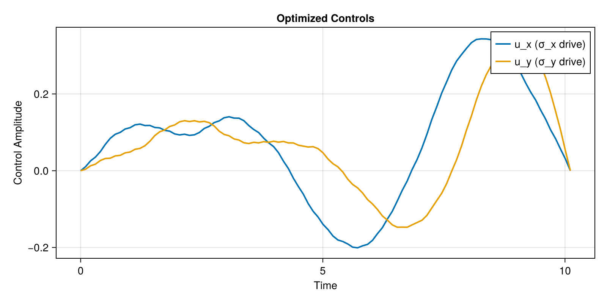

Your First Gate
This tutorial walks through synthesizing your first quantum gate with Piccolo.jl. We'll implement an X gate (NOT gate) on a single qubit.
What We're Doing
We want to find control pulses that implement:
\[X = \begin{pmatrix} 0 & 1 \\ 1 & 0 \end{pmatrix}\]
Our qubit has Hamiltonian:
\[H(t) = \frac{\omega}{2}\sigma_z + u_x(t)\sigma_x + u_y(t)\sigma_y\]
The optimizer will find $u_x(t)$ and $u_y(t)$ that produce the X gate.
Setup
First, load the required packages:
using Piccolo
using CairoMakie
using Random
Random.seed!(42) # For reproducibilityRandom.TaskLocalRNG()Step 1: Define the Quantum System
A QuantumSystem needs:
- Drift Hamiltonian: Always-on terms (qubit frequency)
- Drive Hamiltonians: Controllable interactions
- Drive bounds: Maximum control amplitudes
# The drift Hamiltonian: ω/2 σ_z (qubit frequency)
# We set ω = 1.0 for simplicity
H_drift = 0.5 * PAULIS[:Z]
# The drive Hamiltonians: σ_x and σ_y controls
H_drives = [PAULIS[:X], PAULIS[:Y]]
# Maximum amplitude for each drive (in same units as H_drift)
drive_bounds = [1.0, 1.0]
# Create the system
sys = QuantumSystem(H_drift, H_drives, drive_bounds)QuantumSystem: levels = 2, n_drives = 2Let's check what we created:
sys.levels, sys.n_drives(2, 2)Step 2: Create an Initial Pulse
We need an initial guess for the control pulse. ZeroOrderPulse represents piecewise constant controls - the standard choice for most problems.
# Gate duration and discretization
T = 10.0 # Total time (in units where ω = 1)
N = 100 # Number of timesteps
# Time vector
times = collect(range(0, T, length = N))
# Random initial controls (small amplitude)
# Shape: (n_drives, N) = (2, 100)
initial_controls = 0.1 * randn(2, N)
# Create the pulse
pulse = ZeroOrderPulse(initial_controls, times)ZeroOrderPulse{DataInterpolations.ConstantInterpolation{Matrix{Float64}, Vector{Float64}, Vector{Union{}}, Float64}}(DataInterpolations.ConstantInterpolation{Matrix{Float64}, Vector{Float64}, Vector{Union{}}, Float64}([-0.03633574814517775 -0.031498797116895606 … 0.17995350308617175 -0.1529323847225266; 0.02517372155742292 -0.03112524013244207 … -0.0844068143386927 -0.019509907821117518], [0.0, 0.10101010101010101, 0.20202020202020202, 0.30303030303030304, 0.40404040404040403, 0.5050505050505051, 0.6060606060606061, 0.7070707070707071, 0.8080808080808081, 0.9090909090909091 … 9.090909090909092, 9.191919191919192, 9.292929292929292, 9.393939393939394, 9.494949494949495, 9.595959595959595, 9.696969696969697, 9.797979797979798, 9.8989898989899, 10.0], Union{}[], nothing, :left, DataInterpolations.ExtrapolationType.None, DataInterpolations.ExtrapolationType.None, FindFirstFunctions.Guesser{Vector{Float64}}([0.0, 0.10101010101010101, 0.20202020202020202, 0.30303030303030304, 0.40404040404040403, 0.5050505050505051, 0.6060606060606061, 0.7070707070707071, 0.8080808080808081, 0.9090909090909091 … 9.090909090909092, 9.191919191919192, 9.292929292929292, 9.393939393939394, 9.494949494949495, 9.595959595959595, 9.696969696969697, 9.797979797979798, 9.8989898989899, 10.0], Base.RefValue{Int64}(1), true), false, true), 10.0, 2, :u, [0.0, 0.0], [0.0, 0.0])Check the pulse:
duration(pulse)10.0n_drives(pulse)2pulse(5.0)2-element Vector{Float64}:
0.036820693581548374
-0.004656094092083756Step 3: Define the Goal
A UnitaryTrajectory combines the system, pulse, and target gate.
# Our target: the X gate
U_goal = GATES[:X]
U_goal
# Create the trajectory
qtraj = UnitaryTrajectory(sys, pulse, U_goal)UnitaryTrajectory{ZeroOrderPulse{DataInterpolations.ConstantInterpolation{Matrix{Float64}, Vector{Float64}, Vector{Union{}}, Float64}}, SciMLBase.ODESolution{ComplexF64, 3, Vector{Matrix{ComplexF64}}, Nothing, Nothing, Vector{Float64}, Vector{Vector{Matrix{ComplexF64}}}, Nothing, SciMLBase.ODEProblem{Matrix{ComplexF64}, Tuple{Float64, Float64}, true, SciMLBase.NullParameters, SciMLBase.ODEFunction{true, SciMLBase.FullSpecialize, SciMLOperators.MatrixOperator{ComplexF64, Matrix{ComplexF64}, SciMLOperators.FilterKwargs{Nothing, Val{()}}, SciMLOperators.FilterKwargs{Piccolo.Quantum.Rollouts.var"#update!#_construct_operator##2"{QuantumSystem{Piccolo.Quantum.QuantumSystems.var"#26#27"{SparseArrays.SparseMatrixCSC{ComplexF64, Int64}, Vector{SparseArrays.SparseMatrixCSC{ComplexF64, Int64}}, Int64}, Piccolo.Quantum.QuantumSystems.var"#28#29"{Vector{SparseArrays.SparseMatrixCSC{Float64, Int64}}, Int64, SparseArrays.SparseMatrixCSC{Float64, Int64}}, @NamedTuple{}}}, Val{()}}}, LinearAlgebra.UniformScaling{Bool}, Nothing, Nothing, Nothing, Nothing, Nothing, Nothing, Nothing, Nothing, Nothing, Nothing, Nothing, typeof(SciMLBase.DEFAULT_OBSERVED), Nothing, Piccolo.Quantum.Rollouts.PiccoloRolloutSystem{Union{Int64, AbstractVector{Int64}, CartesianIndex, CartesianIndices}}, Nothing, Nothing}, Base.Pairs{Symbol, Vector{Float64}, Nothing, @NamedTuple{tstops::Vector{Float64}, saveat::Vector{Float64}}}, SciMLBase.StandardODEProblem}, OrdinaryDiffEqLinear.MagnusGL4, OrdinaryDiffEqCore.InterpolationData{SciMLBase.ODEFunction{true, SciMLBase.FullSpecialize, SciMLOperators.MatrixOperator{ComplexF64, Matrix{ComplexF64}, SciMLOperators.FilterKwargs{Nothing, Val{()}}, SciMLOperators.FilterKwargs{Piccolo.Quantum.Rollouts.var"#update!#_construct_operator##2"{QuantumSystem{Piccolo.Quantum.QuantumSystems.var"#26#27"{SparseArrays.SparseMatrixCSC{ComplexF64, Int64}, Vector{SparseArrays.SparseMatrixCSC{ComplexF64, Int64}}, Int64}, Piccolo.Quantum.QuantumSystems.var"#28#29"{Vector{SparseArrays.SparseMatrixCSC{Float64, Int64}}, Int64, SparseArrays.SparseMatrixCSC{Float64, Int64}}, @NamedTuple{}}}, Val{()}}}, LinearAlgebra.UniformScaling{Bool}, Nothing, Nothing, Nothing, Nothing, Nothing, Nothing, Nothing, Nothing, Nothing, Nothing, Nothing, typeof(SciMLBase.DEFAULT_OBSERVED), Nothing, Piccolo.Quantum.Rollouts.PiccoloRolloutSystem{Union{Int64, AbstractVector{Int64}, CartesianIndex, CartesianIndices}}, Nothing, Nothing}, Vector{Matrix{ComplexF64}}, Vector{Float64}, Vector{Vector{Matrix{ComplexF64}}}, Nothing, OrdinaryDiffEqLinear.MagnusGL4Cache{Matrix{ComplexF64}, Matrix{ComplexF64}, Matrix{ComplexF64}, Nothing}, Nothing}, SciMLBase.DEStats, Nothing, Nothing, Nothing, Nothing}, Matrix{ComplexF64}}(QuantumSystem: levels = 2, n_drives = 2, ZeroOrderPulse{DataInterpolations.ConstantInterpolation{Matrix{Float64}, Vector{Float64}, Vector{Union{}}, Float64}}(DataInterpolations.ConstantInterpolation{Matrix{Float64}, Vector{Float64}, Vector{Union{}}, Float64}([-0.03633574814517775 -0.031498797116895606 … 0.17995350308617175 -0.1529323847225266; 0.02517372155742292 -0.03112524013244207 … -0.0844068143386927 -0.019509907821117518], [0.0, 0.10101010101010101, 0.20202020202020202, 0.30303030303030304, 0.40404040404040403, 0.5050505050505051, 0.6060606060606061, 0.7070707070707071, 0.8080808080808081, 0.9090909090909091 … 9.090909090909092, 9.191919191919192, 9.292929292929292, 9.393939393939394, 9.494949494949495, 9.595959595959595, 9.696969696969697, 9.797979797979798, 9.8989898989899, 10.0], Union{}[], nothing, :left, DataInterpolations.ExtrapolationType.None, DataInterpolations.ExtrapolationType.None, FindFirstFunctions.Guesser{Vector{Float64}}([0.0, 0.10101010101010101, 0.20202020202020202, 0.30303030303030304, 0.40404040404040403, 0.5050505050505051, 0.6060606060606061, 0.7070707070707071, 0.8080808080808081, 0.9090909090909091 … 9.090909090909092, 9.191919191919192, 9.292929292929292, 9.393939393939394, 9.494949494949495, 9.595959595959595, 9.696969696969697, 9.797979797979798, 9.8989898989899, 10.0], Base.RefValue{Int64}(100), true), false, true), 10.0, 2, :u, [0.0, 0.0], [0.0, 0.0]), ComplexF64[1.0 + 0.0im 0.0 + 0.0im; 0.0 + 0.0im 1.0 + 0.0im], ComplexF64[0.0 + 0.0im 1.0 + 0.0im; 1.0 + 0.0im 0.0 + 0.0im], SciMLBase.ODESolution{ComplexF64, 3, Vector{Matrix{ComplexF64}}, Nothing, Nothing, Vector{Float64}, Vector{Vector{Matrix{ComplexF64}}}, Nothing, SciMLBase.ODEProblem{Matrix{ComplexF64}, Tuple{Float64, Float64}, true, SciMLBase.NullParameters, SciMLBase.ODEFunction{true, SciMLBase.FullSpecialize, SciMLOperators.MatrixOperator{ComplexF64, Matrix{ComplexF64}, SciMLOperators.FilterKwargs{Nothing, Val{()}}, SciMLOperators.FilterKwargs{Piccolo.Quantum.Rollouts.var"#update!#_construct_operator##2"{QuantumSystem{Piccolo.Quantum.QuantumSystems.var"#26#27"{SparseArrays.SparseMatrixCSC{ComplexF64, Int64}, Vector{SparseArrays.SparseMatrixCSC{ComplexF64, Int64}}, Int64}, Piccolo.Quantum.QuantumSystems.var"#28#29"{Vector{SparseArrays.SparseMatrixCSC{Float64, Int64}}, Int64, SparseArrays.SparseMatrixCSC{Float64, Int64}}, @NamedTuple{}}}, Val{()}}}, LinearAlgebra.UniformScaling{Bool}, Nothing, Nothing, Nothing, Nothing, Nothing, Nothing, Nothing, Nothing, Nothing, Nothing, Nothing, typeof(SciMLBase.DEFAULT_OBSERVED), Nothing, Piccolo.Quantum.Rollouts.PiccoloRolloutSystem{Union{Int64, AbstractVector{Int64}, CartesianIndex, CartesianIndices}}, Nothing, Nothing}, Base.Pairs{Symbol, Vector{Float64}, Nothing, @NamedTuple{tstops::Vector{Float64}, saveat::Vector{Float64}}}, SciMLBase.StandardODEProblem}, OrdinaryDiffEqLinear.MagnusGL4, OrdinaryDiffEqCore.InterpolationData{SciMLBase.ODEFunction{true, SciMLBase.FullSpecialize, SciMLOperators.MatrixOperator{ComplexF64, Matrix{ComplexF64}, SciMLOperators.FilterKwargs{Nothing, Val{()}}, SciMLOperators.FilterKwargs{Piccolo.Quantum.Rollouts.var"#update!#_construct_operator##2"{QuantumSystem{Piccolo.Quantum.QuantumSystems.var"#26#27"{SparseArrays.SparseMatrixCSC{ComplexF64, Int64}, Vector{SparseArrays.SparseMatrixCSC{ComplexF64, Int64}}, Int64}, Piccolo.Quantum.QuantumSystems.var"#28#29"{Vector{SparseArrays.SparseMatrixCSC{Float64, Int64}}, Int64, SparseArrays.SparseMatrixCSC{Float64, Int64}}, @NamedTuple{}}}, Val{()}}}, LinearAlgebra.UniformScaling{Bool}, Nothing, Nothing, Nothing, Nothing, Nothing, Nothing, Nothing, Nothing, Nothing, Nothing, Nothing, typeof(SciMLBase.DEFAULT_OBSERVED), Nothing, Piccolo.Quantum.Rollouts.PiccoloRolloutSystem{Union{Int64, AbstractVector{Int64}, CartesianIndex, CartesianIndices}}, Nothing, Nothing}, Vector{Matrix{ComplexF64}}, Vector{Float64}, Vector{Vector{Matrix{ComplexF64}}}, Nothing, OrdinaryDiffEqLinear.MagnusGL4Cache{Matrix{ComplexF64}, Matrix{ComplexF64}, Matrix{ComplexF64}, Nothing}, Nothing}, SciMLBase.DEStats, Nothing, Nothing, Nothing, Nothing}(Matrix{ComplexF64}[[1.0 + 0.0im 0.0 + 0.0im; 0.0 + 0.0im 1.0 + 0.0im], [0.9987404944669499 - 0.04997900647797129im -0.002516315185586171 + 0.003632049183859544im; 0.0025163151855861713 + 0.0036320491838595435im 0.9987404944669498 + 0.04997900647797128im], [0.9949810326156695 - 0.0998128901148409im 0.000618317190123448 + 0.007053324452425682im; -0.000618317190123448 + 0.007053324452425681im 0.9949810326156693 + 0.09981289011484087im], [0.9887651340956775 - 0.14943984295092333im -0.002956950953183949 - 0.0015809416880881557im; 0.00295695095318395 - 0.0015809416880881557im 0.9887651340956773 + 0.1494398429509233im], [0.9799747340913558 - 0.19864452647497763im 0.010205296881408976 + 0.009258755838166375im; -0.010205296881408974 + 0.009258755838166379im 0.9799747340913557 + 0.19864452647497757im], [0.9684124344840319 - 0.2475462641464486im 0.006026186154200025 + 0.02935794482388511im; -0.00602618615420002 + 0.029357944823885117im 0.9684124344840316 + 0.24754626414644845im], [0.954571577620917 - 0.29591535958187054im -0.0026905777648045873 + 0.034927982380001006im; 0.002690577764804594 + 0.03492798238000102im 0.9545715776209169 + 0.29591535958187043im], [0.9387347697463967 - 0.3431224741834879im 0.004115047313186219 + 0.03204787301821318im; -0.004115047313186214 + 0.03204787301821321im 0.9387347697463968 + 0.3431224741834879im], [0.9205276647108097 - 0.3900108166967894im -0.006094734215670175 + 0.021982619871316816im; 0.006094734215670179 + 0.02198261987131685im 0.9205276647108098 + 0.3900108166967894im], [0.8998675265877257 - 0.43521233432193496im 0.006358472942583042 + 0.028075406831952972im; -0.006358472942583041 + 0.028075406831953007im 0.8998675265877258 + 0.435212334321935im] … [-0.15648685930229375 + 0.9802316220836466im 0.08938839371552491 + 0.08165503659863041im; -0.08938839371552482 + 0.08165503659863042im -0.15648685930229375 - 0.9802316220836476im], [-0.10620206989929963 + 0.9862472347642324im 0.09207417041155788 + 0.0869474520157492im; -0.09207417041155778 + 0.08694745201574922im -0.10620206989929958 - 0.9862472347642334im], [-0.05545792806923436 + 0.989331874880434im 0.09576880739803524 + 0.09473750624430222im; -0.09576880739803516 + 0.09473750624430223im -0.05545792806923427 - 0.9893318748804351im], [-0.0050695865402499915 + 0.9906817788550484im 0.09703570661235975 + 0.09543575838827803im; -0.09703570661235969 + 0.09543575838827804im -0.005069586540249852 - 0.9906817788550496im], [0.043849455056595016 + 0.9909383652577841im 0.0979669881821723 + 0.08075178498325403im; -0.09796698818217225 + 0.08075178498325407im 0.043849455056595224 - 0.9909383652577854im], [0.09419276928652753 + 0.9879693198879236im 0.09445275379439136 + 0.07824974424867037im; -0.09445275379439132 + 0.07824974424867043im 0.09419276928652781 - 0.9879693198879249im], [0.14235459429456465 + 0.9794179639922799im 0.11799643595026199 + 0.08094728158177973im; -0.11799643595026194 + 0.0809472815817798im 0.14235459429456504 - 0.9794179639922813im], [0.1903805029323725 + 0.9727412767337867im 0.1164411106518555 + 0.0630169849461136im; -0.11644111065185546 + 0.06301698494611371im 0.190380502932373 - 0.9727412767337883im], [0.23729640140889527 + 0.961517220257388im 0.12882380706888946 + 0.05078857902292994im; -0.12882380706888946 + 0.050788579022930075im 0.2372964014088959 - 0.9615172202573898im], [0.284832336863387 + 0.9510122210154627im 0.11588306385955975 + 0.03189687863564488im; -0.11588306385955975 + 0.03189687863564504im 0.28483233686338766 - 0.9510122210154642im]], nothing, nothing, [0.0, 0.1, 0.2, 0.3, 0.4, 0.5, 0.6, 0.7, 0.8, 0.9 … 9.1, 9.2, 9.3, 9.4, 9.5, 9.6, 9.7, 9.8, 9.9, 10.0], Vector{Matrix{ComplexF64}}[[[1.0 + 0.0im 0.0 + 0.0im; 0.0 + 0.0im 1.0 + 0.0im]]], nothing, SciMLBase.ODEProblem{Matrix{ComplexF64}, Tuple{Float64, Float64}, true, SciMLBase.NullParameters, SciMLBase.ODEFunction{true, SciMLBase.FullSpecialize, SciMLOperators.MatrixOperator{ComplexF64, Matrix{ComplexF64}, SciMLOperators.FilterKwargs{Nothing, Val{()}}, SciMLOperators.FilterKwargs{Piccolo.Quantum.Rollouts.var"#update!#_construct_operator##2"{QuantumSystem{Piccolo.Quantum.QuantumSystems.var"#26#27"{SparseArrays.SparseMatrixCSC{ComplexF64, Int64}, Vector{SparseArrays.SparseMatrixCSC{ComplexF64, Int64}}, Int64}, Piccolo.Quantum.QuantumSystems.var"#28#29"{Vector{SparseArrays.SparseMatrixCSC{Float64, Int64}}, Int64, SparseArrays.SparseMatrixCSC{Float64, Int64}}, @NamedTuple{}}}, Val{()}}}, LinearAlgebra.UniformScaling{Bool}, Nothing, Nothing, Nothing, Nothing, Nothing, Nothing, Nothing, Nothing, Nothing, Nothing, Nothing, typeof(SciMLBase.DEFAULT_OBSERVED), Nothing, Piccolo.Quantum.Rollouts.PiccoloRolloutSystem{Union{Int64, AbstractVector{Int64}, CartesianIndex, CartesianIndices}}, Nothing, Nothing}, Base.Pairs{Symbol, Vector{Float64}, Nothing, @NamedTuple{tstops::Vector{Float64}, saveat::Vector{Float64}}}, SciMLBase.StandardODEProblem}(SciMLBase.ODEFunction{true, SciMLBase.FullSpecialize, SciMLOperators.MatrixOperator{ComplexF64, Matrix{ComplexF64}, SciMLOperators.FilterKwargs{Nothing, Val{()}}, SciMLOperators.FilterKwargs{Piccolo.Quantum.Rollouts.var"#update!#_construct_operator##2"{QuantumSystem{Piccolo.Quantum.QuantumSystems.var"#26#27"{SparseArrays.SparseMatrixCSC{ComplexF64, Int64}, Vector{SparseArrays.SparseMatrixCSC{ComplexF64, Int64}}, Int64}, Piccolo.Quantum.QuantumSystems.var"#28#29"{Vector{SparseArrays.SparseMatrixCSC{Float64, Int64}}, Int64, SparseArrays.SparseMatrixCSC{Float64, Int64}}, @NamedTuple{}}}, Val{()}}}, LinearAlgebra.UniformScaling{Bool}, Nothing, Nothing, Nothing, Nothing, Nothing, Nothing, Nothing, Nothing, Nothing, Nothing, Nothing, typeof(SciMLBase.DEFAULT_OBSERVED), Nothing, Piccolo.Quantum.Rollouts.PiccoloRolloutSystem{Union{Int64, AbstractVector{Int64}, CartesianIndex, CartesianIndices}}, Nothing, Nothing}(MatrixOperator(2 × 2), LinearAlgebra.UniformScaling{Bool}(true), nothing, nothing, nothing, nothing, nothing, nothing, nothing, nothing, nothing, nothing, nothing, SciMLBase.DEFAULT_OBSERVED, nothing, Piccolo.Quantum.Rollouts.PiccoloRolloutSystem{Union{Int64, AbstractVector{Int64}, CartesianIndex, CartesianIndices}}(Dict{Symbol, Union{Int64, AbstractVector{Int64}, CartesianIndex, CartesianIndices}}(:U => CartesianIndices((2, 2)), :U_2_2 => CartesianIndex(2, 2), :U_1_1 => CartesianIndex(1, 1), :U_2_1 => CartesianIndex(2, 1), :U_1_2 => CartesianIndex(1, 2)), :t, Dict{Symbol, Float64}()), nothing, nothing), ComplexF64[1.0 + 0.0im 0.0 + 0.0im; 0.0 + 0.0im 1.0 + 0.0im], (0.0, 10.0), SciMLBase.NullParameters(), Base.Pairs(:tstops => [0.0, 0.1, 0.2, 0.3, 0.4, 0.5, 0.6, 0.7, 0.8, 0.9 … 9.1, 9.2, 9.3, 9.4, 9.5, 9.6, 9.7, 9.8, 9.9, 10.0], :saveat => [0.0, 0.1, 0.2, 0.3, 0.4, 0.5, 0.6, 0.7, 0.8, 0.9 … 9.1, 9.2, 9.3, 9.4, 9.5, 9.6, 9.7, 9.8, 9.9, 10.0]), SciMLBase.StandardODEProblem()), OrdinaryDiffEqLinear.MagnusGL4(false, 30, 0), OrdinaryDiffEqCore.InterpolationData{SciMLBase.ODEFunction{true, SciMLBase.FullSpecialize, SciMLOperators.MatrixOperator{ComplexF64, Matrix{ComplexF64}, SciMLOperators.FilterKwargs{Nothing, Val{()}}, SciMLOperators.FilterKwargs{Piccolo.Quantum.Rollouts.var"#update!#_construct_operator##2"{QuantumSystem{Piccolo.Quantum.QuantumSystems.var"#26#27"{SparseArrays.SparseMatrixCSC{ComplexF64, Int64}, Vector{SparseArrays.SparseMatrixCSC{ComplexF64, Int64}}, Int64}, Piccolo.Quantum.QuantumSystems.var"#28#29"{Vector{SparseArrays.SparseMatrixCSC{Float64, Int64}}, Int64, SparseArrays.SparseMatrixCSC{Float64, Int64}}, @NamedTuple{}}}, Val{()}}}, LinearAlgebra.UniformScaling{Bool}, Nothing, Nothing, Nothing, Nothing, Nothing, Nothing, Nothing, Nothing, Nothing, Nothing, Nothing, typeof(SciMLBase.DEFAULT_OBSERVED), Nothing, Piccolo.Quantum.Rollouts.PiccoloRolloutSystem{Union{Int64, AbstractVector{Int64}, CartesianIndex, CartesianIndices}}, Nothing, Nothing}, Vector{Matrix{ComplexF64}}, Vector{Float64}, Vector{Vector{Matrix{ComplexF64}}}, Nothing, OrdinaryDiffEqLinear.MagnusGL4Cache{Matrix{ComplexF64}, Matrix{ComplexF64}, Matrix{ComplexF64}, Nothing}, Nothing}(SciMLBase.ODEFunction{true, SciMLBase.FullSpecialize, SciMLOperators.MatrixOperator{ComplexF64, Matrix{ComplexF64}, SciMLOperators.FilterKwargs{Nothing, Val{()}}, SciMLOperators.FilterKwargs{Piccolo.Quantum.Rollouts.var"#update!#_construct_operator##2"{QuantumSystem{Piccolo.Quantum.QuantumSystems.var"#26#27"{SparseArrays.SparseMatrixCSC{ComplexF64, Int64}, Vector{SparseArrays.SparseMatrixCSC{ComplexF64, Int64}}, Int64}, Piccolo.Quantum.QuantumSystems.var"#28#29"{Vector{SparseArrays.SparseMatrixCSC{Float64, Int64}}, Int64, SparseArrays.SparseMatrixCSC{Float64, Int64}}, @NamedTuple{}}}, Val{()}}}, LinearAlgebra.UniformScaling{Bool}, Nothing, Nothing, Nothing, Nothing, Nothing, Nothing, Nothing, Nothing, Nothing, Nothing, Nothing, typeof(SciMLBase.DEFAULT_OBSERVED), Nothing, Piccolo.Quantum.Rollouts.PiccoloRolloutSystem{Union{Int64, AbstractVector{Int64}, CartesianIndex, CartesianIndices}}, Nothing, Nothing}(MatrixOperator(2 × 2), LinearAlgebra.UniformScaling{Bool}(true), nothing, nothing, nothing, nothing, nothing, nothing, nothing, nothing, nothing, nothing, nothing, SciMLBase.DEFAULT_OBSERVED, nothing, Piccolo.Quantum.Rollouts.PiccoloRolloutSystem{Union{Int64, AbstractVector{Int64}, CartesianIndex, CartesianIndices}}(Dict{Symbol, Union{Int64, AbstractVector{Int64}, CartesianIndex, CartesianIndices}}(:U => CartesianIndices((2, 2)), :U_2_2 => CartesianIndex(2, 2), :U_1_1 => CartesianIndex(1, 1), :U_2_1 => CartesianIndex(2, 1), :U_1_2 => CartesianIndex(1, 2)), :t, Dict{Symbol, Float64}()), nothing, nothing), Matrix{ComplexF64}[[1.0 + 0.0im 0.0 + 0.0im; 0.0 + 0.0im 1.0 + 0.0im], [0.9987404944669499 - 0.04997900647797129im -0.002516315185586171 + 0.003632049183859544im; 0.0025163151855861713 + 0.0036320491838595435im 0.9987404944669498 + 0.04997900647797128im], [0.9949810326156695 - 0.0998128901148409im 0.000618317190123448 + 0.007053324452425682im; -0.000618317190123448 + 0.007053324452425681im 0.9949810326156693 + 0.09981289011484087im], [0.9887651340956775 - 0.14943984295092333im -0.002956950953183949 - 0.0015809416880881557im; 0.00295695095318395 - 0.0015809416880881557im 0.9887651340956773 + 0.1494398429509233im], [0.9799747340913558 - 0.19864452647497763im 0.010205296881408976 + 0.009258755838166375im; -0.010205296881408974 + 0.009258755838166379im 0.9799747340913557 + 0.19864452647497757im], [0.9684124344840319 - 0.2475462641464486im 0.006026186154200025 + 0.02935794482388511im; -0.00602618615420002 + 0.029357944823885117im 0.9684124344840316 + 0.24754626414644845im], [0.954571577620917 - 0.29591535958187054im -0.0026905777648045873 + 0.034927982380001006im; 0.002690577764804594 + 0.03492798238000102im 0.9545715776209169 + 0.29591535958187043im], [0.9387347697463967 - 0.3431224741834879im 0.004115047313186219 + 0.03204787301821318im; -0.004115047313186214 + 0.03204787301821321im 0.9387347697463968 + 0.3431224741834879im], [0.9205276647108097 - 0.3900108166967894im -0.006094734215670175 + 0.021982619871316816im; 0.006094734215670179 + 0.02198261987131685im 0.9205276647108098 + 0.3900108166967894im], [0.8998675265877257 - 0.43521233432193496im 0.006358472942583042 + 0.028075406831952972im; -0.006358472942583041 + 0.028075406831953007im 0.8998675265877258 + 0.435212334321935im] … [-0.15648685930229375 + 0.9802316220836466im 0.08938839371552491 + 0.08165503659863041im; -0.08938839371552482 + 0.08165503659863042im -0.15648685930229375 - 0.9802316220836476im], [-0.10620206989929963 + 0.9862472347642324im 0.09207417041155788 + 0.0869474520157492im; -0.09207417041155778 + 0.08694745201574922im -0.10620206989929958 - 0.9862472347642334im], [-0.05545792806923436 + 0.989331874880434im 0.09576880739803524 + 0.09473750624430222im; -0.09576880739803516 + 0.09473750624430223im -0.05545792806923427 - 0.9893318748804351im], [-0.0050695865402499915 + 0.9906817788550484im 0.09703570661235975 + 0.09543575838827803im; -0.09703570661235969 + 0.09543575838827804im -0.005069586540249852 - 0.9906817788550496im], [0.043849455056595016 + 0.9909383652577841im 0.0979669881821723 + 0.08075178498325403im; -0.09796698818217225 + 0.08075178498325407im 0.043849455056595224 - 0.9909383652577854im], [0.09419276928652753 + 0.9879693198879236im 0.09445275379439136 + 0.07824974424867037im; -0.09445275379439132 + 0.07824974424867043im 0.09419276928652781 - 0.9879693198879249im], [0.14235459429456465 + 0.9794179639922799im 0.11799643595026199 + 0.08094728158177973im; -0.11799643595026194 + 0.0809472815817798im 0.14235459429456504 - 0.9794179639922813im], [0.1903805029323725 + 0.9727412767337867im 0.1164411106518555 + 0.0630169849461136im; -0.11644111065185546 + 0.06301698494611371im 0.190380502932373 - 0.9727412767337883im], [0.23729640140889527 + 0.961517220257388im 0.12882380706888946 + 0.05078857902292994im; -0.12882380706888946 + 0.050788579022930075im 0.2372964014088959 - 0.9615172202573898im], [0.284832336863387 + 0.9510122210154627im 0.11588306385955975 + 0.03189687863564488im; -0.11588306385955975 + 0.03189687863564504im 0.28483233686338766 - 0.9510122210154642im]], [0.0, 0.1, 0.2, 0.3, 0.4, 0.5, 0.6, 0.7, 0.8, 0.9 … 9.1, 9.2, 9.3, 9.4, 9.5, 9.6, 9.7, 9.8, 9.9, 10.0], Vector{Matrix{ComplexF64}}[[[1.0 + 0.0im 0.0 + 0.0im; 0.0 + 0.0im 1.0 + 0.0im]]], nothing, false, OrdinaryDiffEqLinear.MagnusGL4Cache{Matrix{ComplexF64}, Matrix{ComplexF64}, Matrix{ComplexF64}, Nothing}(ComplexF64[0.284832336863387 + 0.9510122210154627im 0.11588306385955975 + 0.03189687863564488im; -0.11588306385955975 + 0.03189687863564504im 0.28483233686338766 - 0.9510122210154642im], ComplexF64[0.23729640140889527 + 0.961517220257388im 0.12882380706888946 + 0.05078857902292994im; -0.12882380706888946 + 0.050788579022930075im 0.2372964014088959 - 0.9615172202573898im], ComplexF64[0.23729640140889527 + 0.961517220257388im 0.12882380706888946 + 0.05078857902292994im; -0.12882380706888946 + 0.050788579022930075im 0.2372964014088959 - 0.9615172202573898im], ComplexF64[0.0 + 0.0im 0.0 + 0.0im; 0.0 + 0.0im 0.0 + 0.0im], ComplexF64[0.4790245856749718 - 0.09117900318138936im -0.12760466925456992 - 0.18827282773143933im; 0.1276046692545696 - 0.18827282773143905im 0.4790245856749727 + 0.09117900318138969im], ComplexF64[0.0 + 0.0im 0.0 + 0.0im 0.0 + 0.0im 0.0 + 0.0im; 0.0 + 0.0im 0.0 + 0.0im 0.0 + 0.0im 0.0 + 0.0im; 0.0 + 0.0im 0.0 + 0.0im 0.0 + 0.0im 0.0 + 0.0im; 0.0 + 0.0im 0.0 + 0.0im 0.0 + 0.0im 0.0 + 0.0im], ComplexF64[0.46836717689884844 - 0.159516136574726im 0.1669460588146621 - 0.03293560417593992im; -0.16694605881466193 - 0.03293560417594im 0.46836717689884927 + 0.15951613657472632im], nothing), nothing, false), false, 0, SciMLBase.DEStats(101, 0, 0, 0, 0, 0, 0, 0, 0, 0, 100, 0, 0.0), nothing, SciMLBase.ReturnCode.Success, nothing, nothing, nothing))Step 4: Set Up the Optimization Problem
SmoothPulseProblem creates an optimization problem with:
- Fidelity objective (weight
Q) - Control regularization (weight
R) - Smoothness via derivative bounds
qcp = SmoothPulseProblem(
qtraj,
N;
Q = 100.0, # Fidelity weight (higher = prioritize fidelity)
R = 1e-2, # Regularization weight (higher = smoother controls)
ddu_bound = 1.0, # Limit on control acceleration
)QuantumControlProblem{UnitaryTrajectory{ZeroOrderPulse{DataInterpolations.ConstantInterpolation{Matrix{Float64}, Vector{Float64}, Vector{Union{}}, Float64}}, SciMLBase.ODESolution{ComplexF64, 3, Vector{Matrix{ComplexF64}}, Nothing, Nothing, Vector{Float64}, Vector{Vector{Matrix{ComplexF64}}}, Nothing, SciMLBase.ODEProblem{Matrix{ComplexF64}, Tuple{Float64, Float64}, true, SciMLBase.NullParameters, SciMLBase.ODEFunction{true, SciMLBase.FullSpecialize, SciMLOperators.MatrixOperator{ComplexF64, Matrix{ComplexF64}, SciMLOperators.FilterKwargs{Nothing, Val{()}}, SciMLOperators.FilterKwargs{Piccolo.Quantum.Rollouts.var"#update!#_construct_operator##2"{QuantumSystem{Piccolo.Quantum.QuantumSystems.var"#26#27"{SparseArrays.SparseMatrixCSC{ComplexF64, Int64}, Vector{SparseArrays.SparseMatrixCSC{ComplexF64, Int64}}, Int64}, Piccolo.Quantum.QuantumSystems.var"#28#29"{Vector{SparseArrays.SparseMatrixCSC{Float64, Int64}}, Int64, SparseArrays.SparseMatrixCSC{Float64, Int64}}, @NamedTuple{}}}, Val{()}}}, LinearAlgebra.UniformScaling{Bool}, Nothing, Nothing, Nothing, Nothing, Nothing, Nothing, Nothing, Nothing, Nothing, Nothing, Nothing, typeof(SciMLBase.DEFAULT_OBSERVED), Nothing, Piccolo.Quantum.Rollouts.PiccoloRolloutSystem{Union{Int64, AbstractVector{Int64}, CartesianIndex, CartesianIndices}}, Nothing, Nothing}, Base.Pairs{Symbol, Vector{Float64}, Nothing, @NamedTuple{tstops::Vector{Float64}, saveat::Vector{Float64}}}, SciMLBase.StandardODEProblem}, OrdinaryDiffEqLinear.MagnusGL4, OrdinaryDiffEqCore.InterpolationData{SciMLBase.ODEFunction{true, SciMLBase.FullSpecialize, SciMLOperators.MatrixOperator{ComplexF64, Matrix{ComplexF64}, SciMLOperators.FilterKwargs{Nothing, Val{()}}, SciMLOperators.FilterKwargs{Piccolo.Quantum.Rollouts.var"#update!#_construct_operator##2"{QuantumSystem{Piccolo.Quantum.QuantumSystems.var"#26#27"{SparseArrays.SparseMatrixCSC{ComplexF64, Int64}, Vector{SparseArrays.SparseMatrixCSC{ComplexF64, Int64}}, Int64}, Piccolo.Quantum.QuantumSystems.var"#28#29"{Vector{SparseArrays.SparseMatrixCSC{Float64, Int64}}, Int64, SparseArrays.SparseMatrixCSC{Float64, Int64}}, @NamedTuple{}}}, Val{()}}}, LinearAlgebra.UniformScaling{Bool}, Nothing, Nothing, Nothing, Nothing, Nothing, Nothing, Nothing, Nothing, Nothing, Nothing, Nothing, typeof(SciMLBase.DEFAULT_OBSERVED), Nothing, Piccolo.Quantum.Rollouts.PiccoloRolloutSystem{Union{Int64, AbstractVector{Int64}, CartesianIndex, CartesianIndices}}, Nothing, Nothing}, Vector{Matrix{ComplexF64}}, Vector{Float64}, Vector{Vector{Matrix{ComplexF64}}}, Nothing, OrdinaryDiffEqLinear.MagnusGL4Cache{Matrix{ComplexF64}, Matrix{ComplexF64}, Matrix{ComplexF64}, Nothing}, Nothing}, SciMLBase.DEStats, Nothing, Nothing, Nothing, Nothing}, Matrix{ComplexF64}}}
System: QuantumSystem{Piccolo.Quantum.QuantumSystems.var"#26#27"{SparseArrays.SparseMatrixCSC{ComplexF64, Int64}, Vector{SparseArrays.SparseMatrixCSC{ComplexF64, Int64}}, Int64}, Piccolo.Quantum.QuantumSystems.var"#28#29"{Vector{SparseArrays.SparseMatrixCSC{Float64, Int64}}, Int64, SparseArrays.SparseMatrixCSC{Float64, Int64}}, @NamedTuple{}}
Goal: Matrix{ComplexF64}
Trajectory: 100 knots
State: Ũ⃗
Controls: uStep 5: Solve!
The solve! function runs the optimizer:
cached_solve!(qcp, "first_gate"; max_iter = 20, verbose = false, print_level = 1)Step 6: Analyze the Results
First, check the fidelity:
fidelity(qcp)0.9993911615795472Get the optimized trajectory:
traj = get_trajectory(qcp)
# Check the final unitary
U_final = iso_vec_to_operator(traj[:Ũ⃗][:, end])
round.(U_final, digits = 3)2×2 Matrix{ComplexF64}:
0.017+0.015im -0.017+1.0im
0.017+1.0im 0.017-0.015imStep 7: Visualize
Plot the optimized control pulses:
fig = Figure(size = (800, 400))
# Time axis
plot_times = cumsum([0; get_timesteps(traj)])[1:(end-1)]
# Control pulses
ax1 = Axis(
fig[1, 1],
xlabel = "Time",
ylabel = "Control Amplitude",
title = "Optimized Controls",
)
lines!(ax1, plot_times, traj[:u][1, :], label = "u_x (σ_x drive)", linewidth = 2)
lines!(ax1, plot_times, traj[:u][2, :], label = "u_y (σ_y drive)", linewidth = 2)
axislegend(ax1, position = :rt)
fig
Understanding the Solution
The optimizer found control pulses that:
- Start and end smoothly (due to derivative regularization)
- Stay within bounds (due to drive_bounds)
- Achieve high fidelity (due to the Q-weighted objective)
The X gate rotates the qubit state around the X-axis by π radians. You can see the controls create the right rotation!
What's Next?
Now that you've synthesized your first gate, try:
- Different gates: Change
U_goaltoGATES[:H](Hadamard) orGATES[:T] - Faster gates: Reduce
Tand see how fidelity changes - Smoother pulses: Increase
Ror decreaseddu_bound - Time-optimal: Add
Δt_boundsand useMinimumTimeProblem
Continue to the State Transfer tutorial to learn about preparing specific quantum states.
This page was generated using Literate.jl.